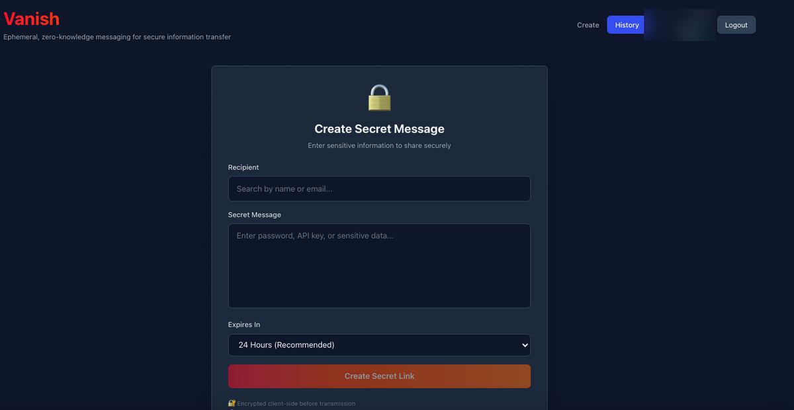
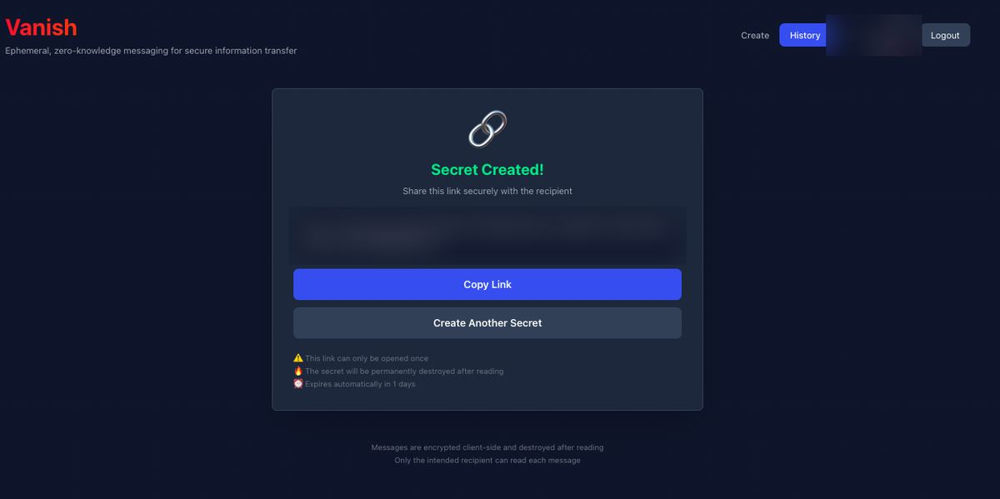
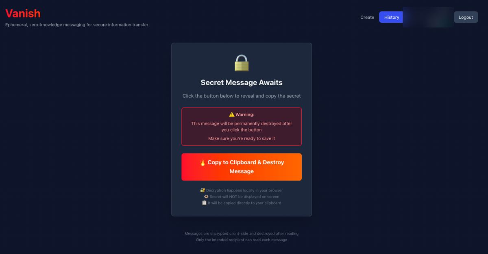
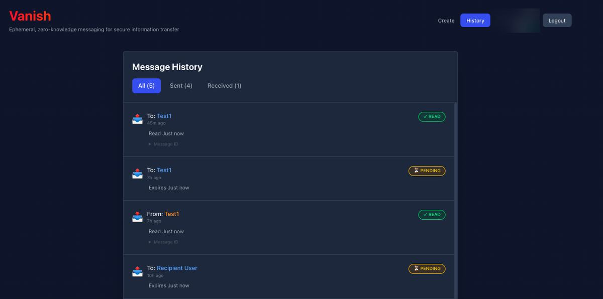

Share secrets that vanish after one read
Vanish is an ephemeral messaging platform for single-use information transfer: passwords, API keys, certificates. Encrypted in your browser, stored briefly, destroyed the moment they are read.
Why it exists
One day, someone sent me a token over a messenger app, and I completely forgot about it. When I stumbled upon it later and used it, it hit me: this is sensitive data, and it had been sitting in a chat. I wanted a way to transfer secrets without prying eyes.
Secrets pasted into chat or email stay there for years. Vanish gives them a lifetime of one read.
How it works
- Encrypt. Your secret is encrypted in your browser with AES-256-GCM before it is sent.
- Store briefly. The server keeps the encrypted message in memory (Redis) with a time-to-live from 1 hour to 7 days.
- Share a link. The decryption key is placed in the link's
#fragment, the part of a URL that browsers don't include in HTTP requests. - Burn on read. The first read returns the message and deletes it in one atomic step. Opening the link again finds nothing.
Features
Encrypted before it leaves your browser
AES-256-GCM through the Web Crypto API. Plaintext is not stored or logged.
Burn on read
A message can be read exactly once, then it is permanently destroyed.
Truly ephemeral
Messages live in Redis memory with a TTL you choose, from 1 hour to 7 days.
Clipboard protection
Retrieved secrets go straight to your clipboard instead of being displayed on the page.
Built for teams
Messages are addressed to a specific recipient, with Okta sign-in and Slack or email notifications.
Open source
Read the code, run it yourself with Docker, and adapt it to your environment.
See it in action




Where you work
Web app
A React single-page app for creating and opening secrets.
Command line
vanish sendpipes secrets from scripts and terminals.Chrome extension
Send secrets without leaving the page you're on.
Integrations
Okta, Slack, email and Vault, each optional and off by default.
Quick start
You need Docker and Docker Compose. Clone the repository, then start the whole stack:
./start.sh dockerOr use Docker Compose directly:
docker-compose up -dThen open http://localhost:3000. For local development, ./start.sh dev runs the Go backend and Vite frontend with hot reload. See the documentation for configuration and deployment.